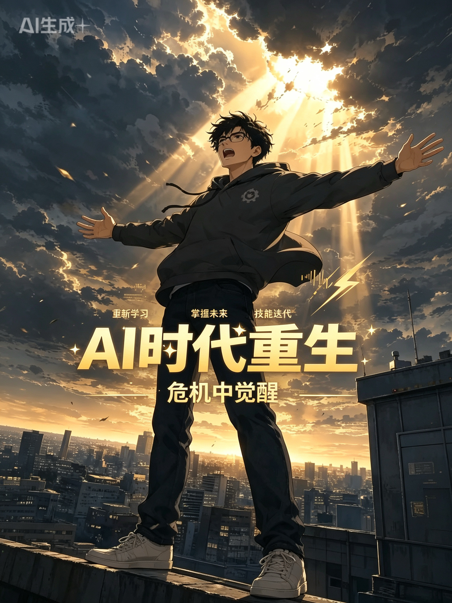

概念稿：封面占位 · 上线后嵌竖屏视频播放器
为什么这样排？
文件实际是 1080×1920（竖屏 9:16），不是 16:9。竖屏本来就更适合手机全屏看。
放到个人网页时，不必改成宽屏：
- 桌面：中间立一块竖屏卡片（大约 360–400px 宽），两侧留白，和色块站很搭。
- 手机：接近全宽，接近原生观看体验。
- 硬拉成 16:9 会裁切画面或留下难看黑边，没必要。
网页标准做法：保留 9:16，用自适应竖屏播放器；需要时另做横版封面图，而不是强行改视频比例。
原片约 242MB 的 MOV，上线前建议转成网页友好的 MP4/WebM（H.264），并考虑外链到抖音/视频号，站点只做嵌入或封面跳转。